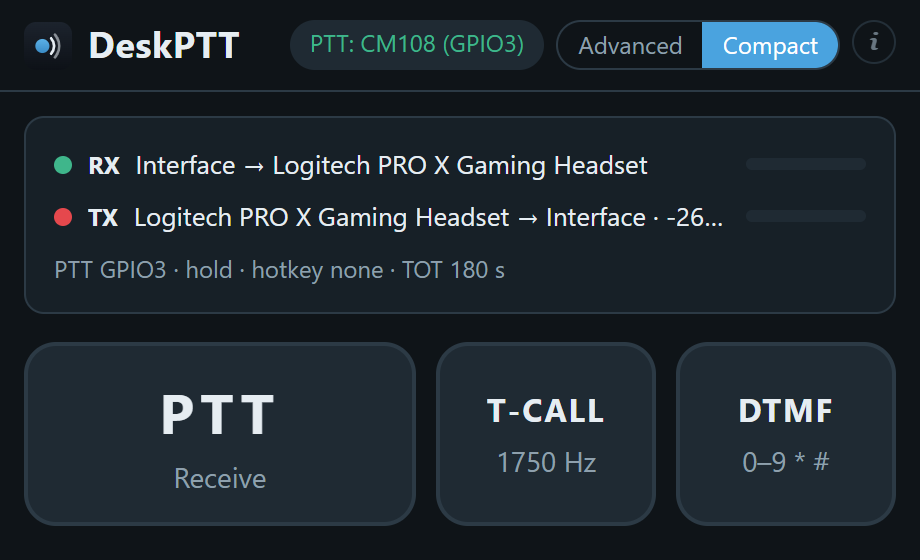
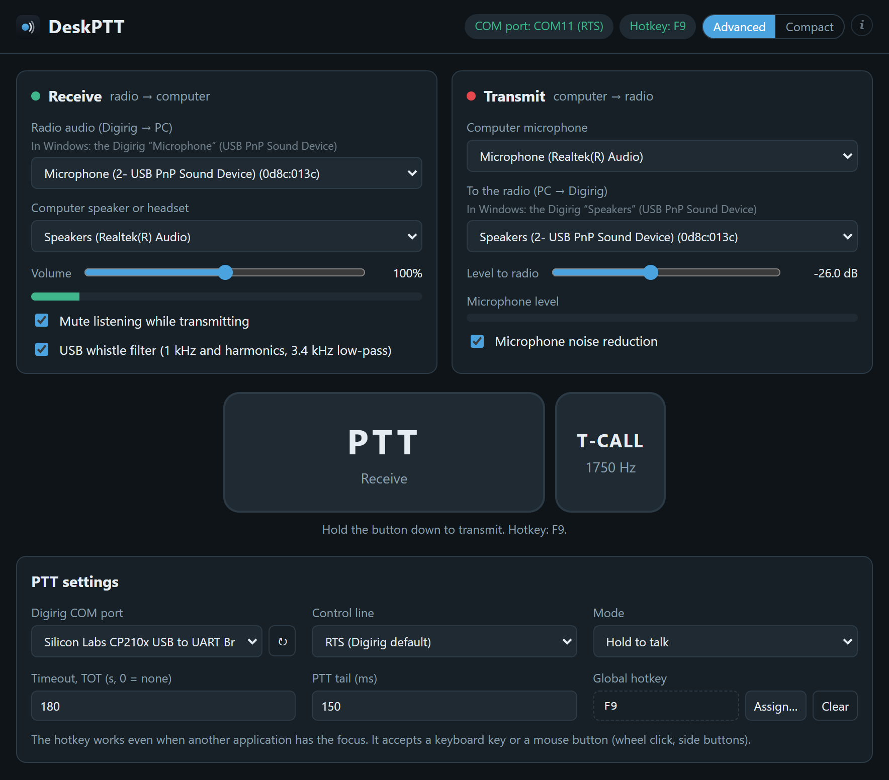

Libre et open source · Par et pour les radioamateurs
Votre poste FM,
depuis votre bureau.
DeskPTT transforme votre PC Windows en micro, haut-parleur et PTT de bureau pour votre émetteur-récepteur FM VHF/UHF, via une interface audio USB. Plus besoin d'un micro à main supplémentaire.

🖥️ Windows 10 et 11
Installeur 64 bits, construit publiquement par GitHub Actions. Une version macOS est en projet.
🎙️ Son + PTT, pas de CAT
DeskPTT fait passer le son dans les deux sens et commande l'émission. Fréquence, mode et mémoires se règlent sur le poste : c'est exactement ce dont ont besoin la plupart des mobiles et portatifs FM VHF/UHF, avec ou sans prise CAT.
🔌 Interfaces audio USB
Toute interface vue comme une carte son USB avec un port COM dont la ligne RTS ou DTR commande le PTT. Sinon, le VOX du poste prend le relais.
Tout ce qu'il faut pour trafiquer en FM depuis le PC de la station
Réception
Le son du poste dans vos haut-parleurs ou votre casque, avec réglage du volume et un filtre contre le sifflement USB à 1 kHz des puces son bon marché.
Émission
Le micro de votre PC vers le poste, avec un niveau réglé en dB, un vumètre et une réduction de bruit optionnelle.
Le PTT à votre façon
Bouton à l'écran ou raccourci global — touche du clavier ou bouton latéral de souris — qui marche même quand une autre application a le focus. Maintenir ou bascule, ou bouton VOX / MUTE pour le VOX du poste.
Pensé pour les relais
Bouton T-CALL (tonalité 1750 Hz), coupure automatique (TOT) et traîne PTT réglable.
Sécurité d'abord
Le PTT retombe en cas de plantage, de rechargement, de perte du port ou à la fermeture. Les lignes sont baissées dès l'ouverture du port.
Simple ou détaillé
Basculez entre les vues Compacte et Avancée. Interface en français et en anglais.

Démarrage rapide
Environ cinq minutes, du téléchargement à votre premier passage en émission.
-
Branchez l'interface
Reliez l'interface audio à un port USB et à la prise micro/haut-parleur ou data de votre poste. Windows affiche une carte son USB (souvent USB PnP Sound Device) et un port COM. Si vous utilisez VARA, c'est le même port.
-
Installez DeskPTT
Téléchargez l'installeur et lancez-le. Il n'est pas signé : si SmartScreen affiche Windows a protégé votre ordinateur, cliquez sur Informations complémentaires → Exécuter quand même. Vous pouvez vérifier le fichier avec le
.sha256publié dans la release. -
Passez l'interface en français
L'application démarre en anglais : bouton i en haut à droite → Settings → Language = Français.
-
Choisissez les périphériques audio
Windows nomme l'interface du point de vue de l'ordinateur :
- Réception — Son du poste : le Microphone de l'interface ; Haut-parleur ou casque de l'ordinateur : votre casque.
- Émission — Microphone de l'ordinateur : votre micro ; Vers le poste : les Haut-parleurs de l'interface.
DeskPTT propose des choix par défaut cohérents et ne prend jamais l'interface pour votre casque.
-
Choisissez le port COM
Dans Réglages PTT, sélectionnez le port COM de l'interface et la ligne qui commande le PTT, en général RTS. La pastille en haut passe au vert : Port COM : COMx (RTS). Pas de PTT sur votre interface ? Passez en mode VOX du poste (voir la FAQ).
-
Réglez un raccourci (facultatif)
Cliquez sur Assigner… puis appuyez sur une touche ou un bouton latéral de souris. Il passe le poste en émission même quand vous êtes dans une autre application.
-
Réglez le niveau d'émission
Passez en émission sur une fréquence libre ou sur une charge fictive et demandez un report. Partez de −26 dB et ajustez le curseur Niveau vers le poste : les entrées des interfaces sont sensibles, un petit réglage suffit.
-
Bon trafic
Passez en vue Compacte et gardez DeskPTT dans un coin de l'écran. Utilisez T-CALL pour ouvrir les relais qui demandent une tonalité 1750 Hz.
Plus de détails : guide d'utilisation en français · README (anglais)
FAQ
Quels postes sont compatibles ?
Tout émetteur-récepteur auquel l'interface peut envoyer du son et commander l'émission : la plupart des mobiles et portatifs FM VHF/UHF. DeskPTT a été développé avec un Icom ID-5200. Il n'utilise pas le CAT : le modèle de poste importe peu, pourvu que le câble soit le bon.
L'interface audio doit aussi pouvoir commander le PTT : DeskPTT le fait par une ligne d'un port COM (RTS ou DTR), comme sur les interfaces qui associent une puce son USB de type CM108 à une puce USB-série. Le PTT par la broche GPIO de la puce CM108 n'est pas encore pris en charge. Si votre interface ne peut pas passer le poste en émission, passez DeskPTT en mode VOX du poste (À propos → Réglages → Commande d'émission) : le bouton PTT devient VOX / MUTE et ouvre ou coupe le son envoyé au poste, dont le VOX déclenche l'émission.
J'entends un sifflement aigu.
Beaucoup de puces son USB laissent passer le bruit de trame USB à 1 kHz. Gardez le Filtre anti-sifflement USB coché (activé par défaut) : il coupe 1 à 4 kHz et filtre au-dessus de 3,4 kHz.
Puis-je utiliser DeskPTT et VARA en même temps ?
Non : un seul programme à la fois peut ouvrir le port COM. Fermez l'un avant d'utiliser l'autre.
Mac ou Linux ?
Windows 10/11 x64 aujourd'hui. Une version macOS est en projet ; le code est ouvert si vous voulez aider.
Est-ce sûr pour mon émetteur ?
DeskPTT est conçu pour retomber en « PTT coupé » : plantage, rechargement, port débranché ou fermeture relâchent tous le PTT, et le TOT coupe les émissions trop longues. Cela reste un logiciel expérimental pour le radioamateurisme : vous restez responsable de votre station et de vos émissions.